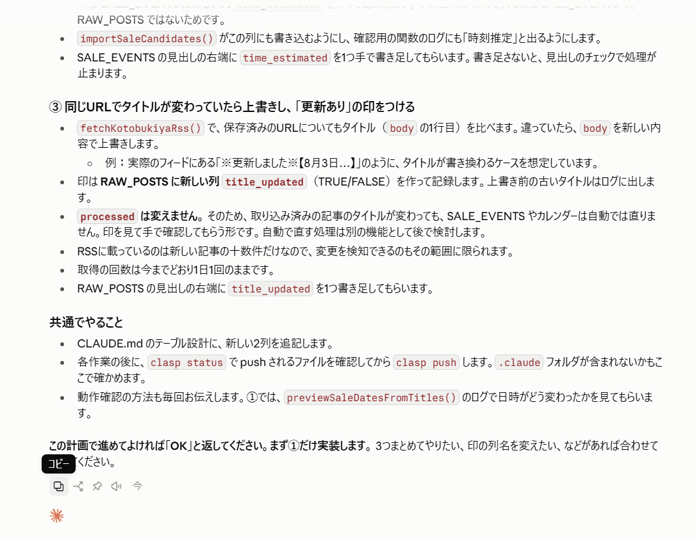

営業職として30年、Windowsを毎日仕事で使ってきました。Ctrl+AとCtrl+Cくらいは、目をつぶっていても押せます。
それなのに、AIとのやり取りでは、ずっとスクショを使っていました。今日はそんな、ちょっと恥ずかしい話です。
スマホでは「スクショ」が一番早かった
私がAIを使い始めたのは、ほとんどスマホからでした。
スマホには、Ctrl+AもCtrl+Cもありません。長い文章をコピーしようとすると、指で範囲を選んで、端っこをずるずる引っぱって……と、とにかく手間がかかります。
だから、AIの返事を別のAIに見せたいときは、スクショ。これが一番早くて、普通のやり方だと思っていました。
何枚も撮って、撮り忘れて、催促される
AIの返事が長いと、スクショは3枚、4枚と増えていきます。
しかも初心者なので、たまに途中の1枚を撮り忘れます。すると、AIからこんな返事が来ます。
この部分の情報が足りません。続きの画面を送ってください。
言われたとおりにスクショを追加すると、ちゃんと話が進む。だから私は「スクショをチャットで送るのは、有効な手段なんだ」と、むしろ自信を持っていました。
Claude Codeに、薄い「コピー」ボタンがあった
ところが、PCでClaude Codeを使ってアプリを作っていたある日。
AIの返事の下に、薄く小さなアイコンが並んでいるのに気づきました。マウスを乗せると「コピー」の文字。

押してみたら、長い返事がまるごとコピーされて、あとはチャット欄に貼り付けるだけ。スクショ何枚分もの作業が、ボタン1つで終わりました。
範囲指定コピーを避けていた、もう一つの理由
実はPCでも、範囲指定してコピーするのはあまり好きではありませんでした。
LINEなどで長文を貼り付けると、画面いっぱいに文字が広がって読みにくい。相手にも悪いな、と思っていたんです。
でも、AIとのチャットは違いました。長い文章を貼り付けても、自分の発言は短くまとめて表示してくれる。読みにくくなる心配は、いりませんでした。
スクショよりテキストのほうがいい理由
あとで知ったのですが、AIに渡すならテキストのほうが得なことが多いそうです。
スクショだと、AIは画像から文字を読み取ることになるので、細かい英数字の名前を読み間違えることがあります。テキストなら、そのまま正確に伝わります。
それに、画像はAIの「記憶の容量」を多く使うので、何枚も送ると、長い会話で前の内容を忘れやすくなるそうです。
使い分けにしました
とはいえ、スクショが悪いわけではありません。このブログのように「どんな画面で、どんな返事が来たか」を記録に残したいときは、やっぱりスクショが便利です。
今の使い分け
- AIに渡すとき:コピーボタンでテキストを貼る
- 記録や説明に残すとき:スクショを撮る
エンジニアには「当たり前」でも
たぶんエンジニアの人に話したら、「え?それ知らなかったんですか?」という顔をされると思います。
でも、スマホからAIに入った人なら、同じことをしている人は結構いるのではないでしょうか。文系営業の私がつまずいたところは、きっと誰かもつまずいている。そう思って書いてみました。
ちなみにClaude Codeには、もう一つ「知っていれば一瞬」だった機能があります。その話は、次の記事に書きました。